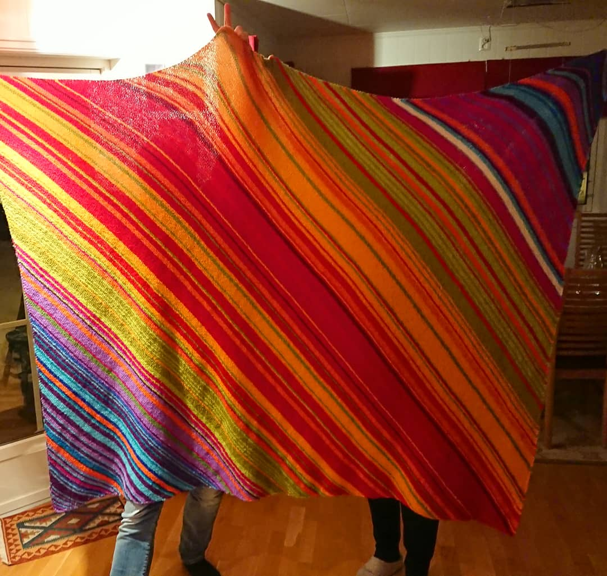

<!doctype html>
<html>
  <head>
<meta charset="utf-8">
<meta name="viewport" content="width=device-width, initial-scale=1.0, maximum-scale=1.0, user-scalable=no">

<title>Lecture 11</title>

<link rel="stylesheet" href="https://cdnjs.cloudflare.com/ajax/libs/reveal.js/3.6.0/css/reveal.css">
<link rel="stylesheet" href="https://cdnjs.cloudflare.com/ajax/libs/reveal.js/3.6.0/css/theme/white.min.css">
<link rel="stylesheet" href="https://maxcdn.bootstrapcdn.com/font-awesome/4.5.0/css/font-awesome.min.css">

<!-- Theme used for syntax highlighting of code -->
<link rel="stylesheet" href="https://cdnjs.cloudflare.com/ajax/libs/highlight.js/9.12.0/styles/github.min.css">
<link href="https://fonts.googleapis.com/css?family=Questrial" rel="stylesheet">

<!-- Printing and PDF exports -->
<script>
    var link = document.createElement( 'link' );
    link.rel = 'stylesheet';
    link.type = 'text/css';
    link.href = window.location.search.match( /print-pdf/gi ) ?  '/revealjs/css/print/pdf.css' : '/revealjs/css/print/paper.css';
    document.getElementsByTagName( 'head' )[0].appendChild( link );
</script>
<script src="https://cdnjs.cloudflare.com/ajax/libs/reveal.js/3.6.0/lib/js/head.min.js"></script>
<script src="https://cdnjs.cloudflare.com/ajax/libs/reveal.js/3.6.0/js/reveal.min.js"></script>

<script src="https://cdnjs.cloudflare.com/ajax/libs/vega-lite/2.3.1/vega-lite.min.js"></script>


<style type="text/css">
.reveal section.present {
  text-align: left;
}
.centered {
  text-align: center;
}
.reveal {
  font-size: 30px;
  font-family: 'Questrial', sans-serif;
}
.reveal section img {
  box-shadow: none;
  border: 0px;
  display: block;
  margin-left: auto;
  margin-right: auto;
}
.reveal bigtext {
  font-size: 800%;
}

.reveal h1, .reveal h2, .reveal h3 {
  text-transform: none;
}

.reveal .titleslide h1 {
  text-align: center;
}
.reveal .titleslide h2 {
  text-align: right;
}

.vertical_center section {
  vertical-align: middle;
}

.left_abs {
  left:0%;
  text-align: left;
  float: left;
  width:50%;
  z-index:-10;
}

.left {
  left:-8.33%;
  text-align: left;
  float: left;
  width:50%;
  z-index:-10;
}

.right {
  left:31.25%;
  top: 75px;
  float: right;
  text-align: right;
  z-index:-10;
  width:50%;
}

.reveal table td {
  text-align: left;
  padding: 0.2em 0.5em 0.2em 0.5em;
  border: solid; 
}

.reveal table tbody tr:last-child th,
.reveal table tbody tr:last-child td {
  border-bottom: solid; }

.reveal .table-hl {
  background: #aaa;
}

.reveal .slide-number {
  font-size: 36pt;
  right:7%;
}

</style>
  </head>

  <body>
    <div class="reveal">
      <div class="slides">
        <section data-markdown
           data-separator="^\n---\n"
           data-separator-vertical="^\n----\n"
           data-separator-notes="notes?:"
           >
          <script type="text/template">
<!-- .slide: class="titleslide" -->

# Data Visualization
<div style="height: 6.0em;"></div>
## AJ Christensen
## Spring 2019
## Lecture 11

---

## Warm-Up Activity

 1. What is the visualization trying to show?
 1. What are its methods?
 1. What are the strengths / weaknesses?

https://vimeo.com/239582792

---

## Today

 * Validation
 * Publishing
 * More on Idyll

---

## Validation

How do you know your visualization is actually useful? Is it...

 * More comprehensive or contextual
 * More revealing or educational
 * More fun or pleasant to use
 * More efficient or fast

notes:
What do we even mean "more than"? More than what?

More than just looking at numbers?

More than a previous visualization?

More than the state of the art?

---

## Validation

Why is validating a visualization important?

 1. The design space is huge
 1. Most designs are ineffective
 1. User-focused design is often an afterthought
 1. The "quality" of a visualization is subjective

notes:
Can you all think of a user experience that drives you nuts in your daily life? A pointless button in your email? A door that opens the wrong way? A noisy piece of machinery?

---

## Validation

What can a visualization designer get wrong?

 * Misunderstand the needs of the domain expert or educator
 * Interpret the data incorrectly
 * Represent the data in a visually confusing way
 * The software is too laggy or difficult to use in a practical setting

notes:
Any other ideas?

---

## Methods of Validation

Before developing your visualization system:

 1. Observe and interview target users or audience members
 1. Justify interaction design plans against the academic literature and existing tools
 1. Do an analysis of the complexity of the system

--- 

## Methods of Validation

After developing your visualization prototype:

 1. Measure system performance
 1. Usability studies (formal and/or informal)
 1. Measure human time to complete a task, or number of user erros
 1. Do a field study - perhaps even collect user data with the system

notes:
You don't have to do all of these all the time, but depending on the project they might all be a good idea

Also, remember to respect user privacy when collecting user data. This is extremely sensitive.

---

## Methods of Visualization:

After publishing your visualization:

 1. Observe adoption rates
 1. Solicit anecdotal user feedback

notes:
This is especially valuable if you expect to have to make more than one visualization in your life. Building intuition for what works and what doesn't is a large part of the career success of a visualization designer.

The Advanced Visualization Lab interacts with audiences through lab demos and conference talks regularly to collect this kind of feedback.

---

## Validation in Final Project

Your peers will ask you questions at the end of your presentation. Try to understand what is working for them and what is not. It will help hone your instincts.

---

## Publishing

Your stunning visualizations will do no one any good if they reside only on your laptop. How do you get them out there?

 * Presentations
 * The Internet
 * Popular Media
 * Physical Objects

---

## Publishing for the Web

 * Raw HTML, CSS, SVG, and JavaScript
 * Content Management Systems
 * Idyll
 * GitHub Pages
 * Social Media

---

## Raw HTML, CSS, SVG, and JavaScript

Pros:
 * Lower activation energy

Cons:
 * No reproducibility

---

## Content Management Systems

There are dozens of these, for instance: 
 * Squarespace
 * Wordpress
 * Wix
 * Drupal

---

## Content Management Systems

Pros:
 * Pre-built templates
 * Plugins with visualization tools

Cons: 
 * Visualization tools not automatically built in
 * More effort because they're meant for whole websites

--- 

## Idyll

Pros:
 * Visualization-ready

Cons:
 * Unique syntax
 * Not well-documented

--- 

## GitHub Pages

Pros: 
 * Extremely flexible (there's a lot you can do)

Cons:
 * Extremely flexible (there's a lot to learn)

---

## Social Media

How can visualization be distributed on social media?
 * Embedded videos using YouTube, Vimeo, FB video, etc
 * SketchFab scenes can be shared on Reddit, Facebook, and Twitter
 * APIs

---

## Social Media

Pros:
 * Huge audience

Cons:
 * Limited functionality
 * Visualizations have shorter expiration date

---

## Sharing Visualizations in Live Presentation

 * Jupyter Notebook (cleaned up)
 * 3D PDF
 * Powerpoint
 * Mobile App
 * Printed on paper (72 vs 300dpi)

---

## Sharing Visualizations through Popular Media

 * Videos and films
 * Museum kiosks
 * App Stores

---

## Making Visualization

 * 3D printing 
 * Printed leggings
 * Blankets
 * Whatever you can think of (instructables.com)



--- 

## Technical Limitations

 * Memory
 * Screen Size
 * Interaction technique (mouse and keyboard vs touchscreen)
 * Disk space

---

## More Idyll...

          </script>
        </section>
      </div>
    </div>
<script>
    // More info about config & dependencies:
    // - https://github.com/hakimel/reveal.js#configuration
    // - https://github.com/hakimel/reveal.js#dependencies
    Reveal.initialize({
        dependencies: [
            { src: 'https://cdnjs.cloudflare.com/ajax/libs/reveal.js/3.6.0/plugin/markdown/marked.js' },
            { src: 'https://cdnjs.cloudflare.com/ajax/libs/reveal.js/3.6.0/plugin/markdown/markdown.min.js' },
            { src: 'https://cdnjs.cloudflare.com/ajax/libs/reveal.js/3.6.0/plugin/notes/notes.min.js', async: true },
            { src: 'https://cdnjs.cloudflare.com/ajax/libs/reveal.js/3.6.0/plugin/highlight/highlight.min.js', async: true, callback: function() { hljs.initHighlightingOnLoad(); } },
            { src: '/reveal.js-plugins/chalkboard/chalkboard.js' },
            { src: 'https://cdnjs.cloudflare.com/ajax/libs/reveal.js/3.6.0/plugin/math/math.min.js', async: true }
        ],
		keyboard: {
			67: function() { RevealChalkboard.toggleNotesCanvas() },	// toggle notes canvas when 'c' is pressed
			66: function() { RevealChalkboard.toggleChalkboard() },	// toggle chalkboard when 'b' is pressed
			46: function() { RevealChalkboard.clear() },	// clear chalkboard when 'DEL' is pressed
			 8: function() { RevealChalkboard.reset() },	// reset chalkboard data on current slide when 'BACKSPACE' is pressed
			68: function() { RevealChalkboard.download() },	// downlad recorded chalkboard drawing when 'd' is pressed
		},
        center: false,
        transition: 'none',
        backgroundTransition: 'none',
        showNotes: true,
        progress: false,
	slideNumber: true,
    });
</script>
  </body>
</html>

